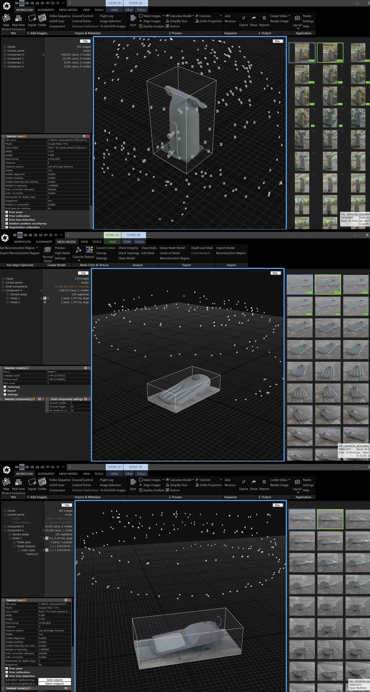

3D assets
Product Digitization & 3D Assets
High-detail product assets connecting digital capture, model optimization and material creation for digital product delivery.
Project type3D assets
My contributionAsset production / Topology & materials
ToolsRealityCapture / Blender / UE5 / 3ds Max

Project context
At Matrix Industrial Technology (Shenzhen) Co., Ltd., I created digital product assets and documented production workflows.
What I did
- Created high-detail product assets, optimized topology and developed materials.
- Documented workflows, accuracy requirements, production standards and delivery specifications.
- Prepared deliverable assets to support B2B digital product deployment.
Work & process
1 / Open original image

Contribution & credits
Commercial project. The images document digital capture and asset production.